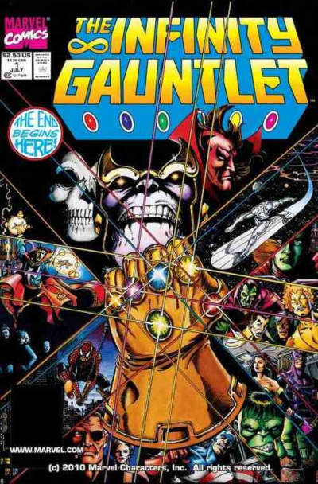

Historia
Soy Thanos, y mi nombre significa muerte
.
Thanos nació en un planeta llamado Titán. Es un supervillano ficticio que aparece en los cómics estadounidenses publicados por Marvel Comics, creado por Jim Starlin y Mike Friedrich, en honor al personaje de DC Comics creado por Jack Kirby, Darkseid. Thanos hizo su primera aparición en las páginas de Iron Man Vol. 1. Poco a poco este personaje evolucionaría para convertirse en uno de los villanos más temidos de todo el universo.
Hijo de Mentor y su esposa Sui-San, y hermano del vengador Eros, alias Starfox. Thanos portaba genes viciados, pertenecía a la raza prima de los Titanes, los Desviantes. Durante sus primeros años de escuela, Thanos fue un chico pacífico, pero debido a su aspecto simiesco y deforme, fue discriminado tanto por su familia como por el resto de la sociedad y acabó convirtiéndose en un ser sombrío y vengativo .
Su falta de arraigo alimentó un espíritu nihilista y una acabó obsesionándose con la Muerte. El apodado 'Titán Loco' se enamoró de la entidad cósmica conocida como Ama Muerte, un ser que encarna de forma física a la muerte, quien le enseñó las artes oscuras para dominar al ejercito de los Chitauri que aprecen en la película The Avengers.
Thanos se convirtió en un señor de la guerra y comenzó una campaña de devastación por el cosmos. A medida que sus poderes comenzaron a crecer, también aumentó su ambición y deseo de destrucción. Uno de sus golpes más funestos sería contra su planeta: Titán, en un bombardeo que acabaría la vida de su madre. Allí, se declaró el líder de los supervivientes y comenzó a preparar la conquista de la Tierra, el planeta más habitado.
El Titán loco en los cómics
-
El Guantelete del Infinito

A lo largo de su historia, Thanos, asesinó a diferentes héroes y seres cósmicos que han interferido con su objetivo máximo: conseguir las Gemas del Infinito y "salvar el universo".
Escrito por Jim Starlin, es uno de los cómics más épicos del supervillano, fue el gran evento cósmico de la década de los noventa de Marvel Comics, giraba en torno a la figura de Thanos, que se enfrenta a los vengadores para hacerse de las con las seis Gemas del Infinito en su poder quería complacer a La Muerte, de quien estaba enamorado.
Las seis gemas le otorgan el control absoluto sobre el espacio, tiempo, mente, alma, poder y realidad. De esta forma, Thanos lograría hacer realidad la promesa que le hizo a su adorada Muerte: eliminar a la mitad de los seres vivos del universo para restaurar el equilibrio cósmico. Para conseguirlo, deberá enfrentar a los poderosisímos vengadores.
Jim Starlin firmó también una serie de 4 novelas gráficas. Aunque su canonicidad y su continuidad con el UMC tradicional está sujeta a debate, estamos ante una serie muy fiel al espíritu de los relatos de este autor. Se trata de una historia metafísica, acerca del multiverso, el sentido de la vida y del papel de los héroes y villanos, sesuda en los términos propuestos por Starlin.
Estas 4 novelas gráficas son: - La relatividad del Infinito
- La entidad del Infinito
- El final de Infinito
- La revelación del Infinito

Poderes y habilidades
- Inmortalidad: es inmune a todas las enfermedades, infecciones y efectos del envejecimiento.
- Factor de curación: es capaz de regenerar el tejido dañado con mucha mayor velocidad y eficiencia que un ser humano o diversas razas extraterrestres.
- Manipulación de la energía: proyecta la energía como una fuerza demoledora, explosiones de radiación gamma y rayos infrarrojos de calor.
- Manipulación de la materia: capacidaz de manipular la materia a nivel atómico. En una ocasión, transformo a un skrull en piedra.
- Teletransportación: puede tele-transportarse a sí mismo a través de distancias desconocidas por sus propios medios de la misma manera que la mayoría de los Eternos nacidos en la Tierra.
- Maestro táctico:es capaz de predecir los movimientos de sus enemigos, formular trampas para sacarlos fuera del camino, alterar la gravedad, lanzar una luna de Titán, etc.
Glosario
- Chitauri
- fueron una especie inteligente de seres cibernéticamente mejorados que operaron bajo una mente central. Bajo el mando de Thanos, fueron la primera gran amenaza a la Tierra.
- Gemas del infinito
- seis objetos inmensamente poderosos, similares a unas piedras, vinculados a diferentes aspectos del universo, creadas por las Entidades Cósmicas. Sólo los seres de inmenso poder pudieron manejar las Gemas, como los Celestiales y los Titanes.
- Guantelete del infinito
- un objeto extremadamente poderoso construido por orden de Thanos para canalizar el poder de las seis gemas del infinito, con este poder se volvió el ser más poderoso de todos.
- Skrull
- son una raza alienígena con el poder de cambiar de forma y son tecnológicamente avanzados.